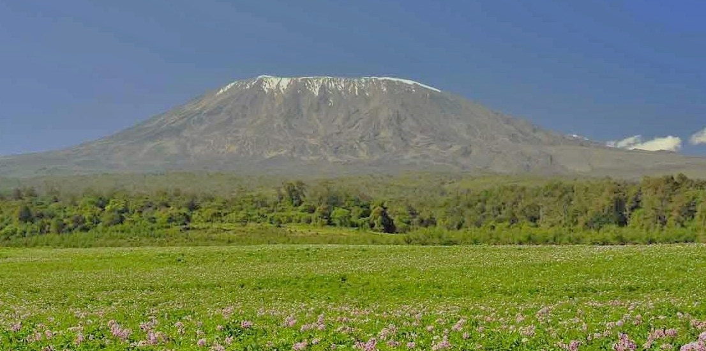

Mlima
Mlima ni umbo la ardhi lenye mwinuko mrefu zaidi juu ya uso wa dunia. Sehemu ya juu ya mlima huitwa kilele cha mlima. Kilele cha mlima kinaweza kuwa na theluji au barafu au kisiwe nazo. Pia, mlima huwa na miteremko mikali. Tanzania ina milima mingi inayotofautiana kwa urefu. Mfano; mlima mrefu kuliko yote Tanzania ni mlima Kilimanjaro, ambao upo katika mkoa wa Kilimanjaro. Mlima Kilimanjaro una urefu wa mita 5,895. Kilele cha mlima Kilimanjaro kimefunikwa na barafu na theluji. Hii ni kwa sababu kadiri mwinuko wa ardhi unavyoongezeka joto hupungua. Pia, mlima Kilimanjaro ni wa kwanza kwa urefu barani Afrika. Kielelezo namba 3 kinaonesha mandhari ya mlima Kilimanjaro.

FOR ONLINE READING ONLY